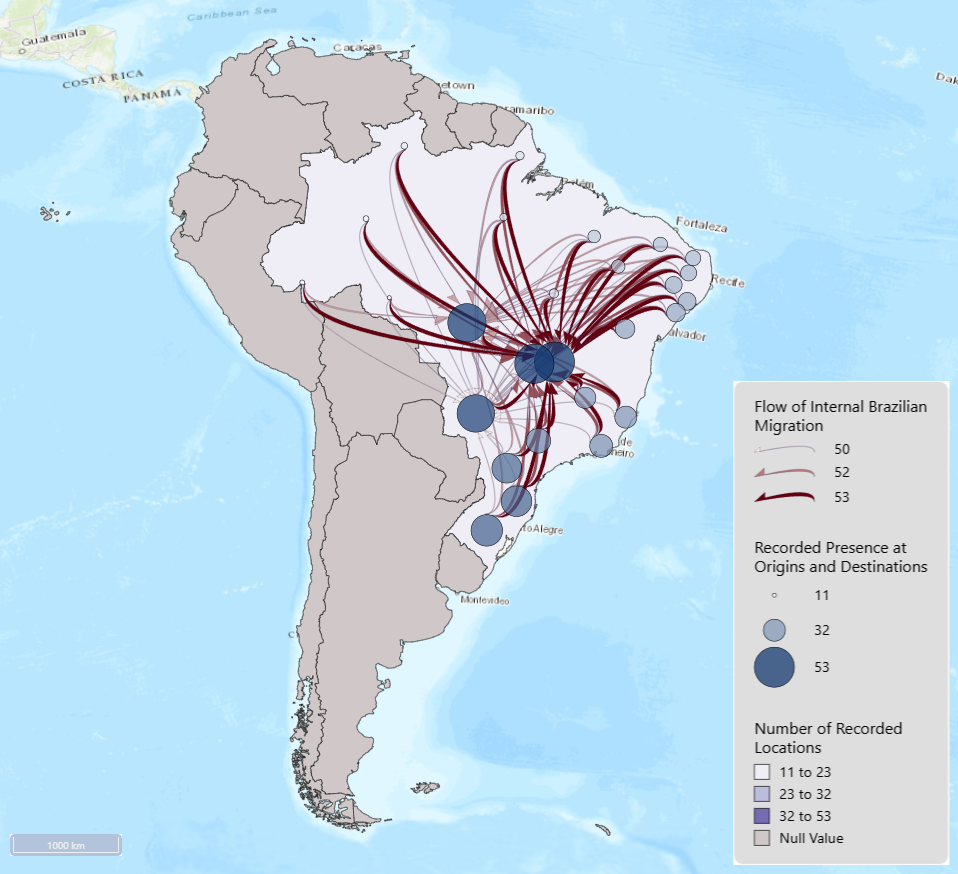

The most flows are seen slightly lower than the center. This is easy to see because not only are these dots larger , but they are darker. These both make the dots hold more visual weight. Many of the flow lines converge here which the dots hold more visual weight. Many of the flow lines converge here which make sense as the dots are a result of the amount of flow lines that converge at that point. Many flows begin on the outskirts of the country and moveinwards. This was most surprising to me on the coast. An area easily accessed by water seems as though it would offer good economic wealth through ports. The populated point destinations in the middle are the capital of the country though, so this made the migration pattern clearer. This area also has a large water source, so it is not as though they have moved entirely away from the water. Most migration takes place in the southern portion of the country. This makes sense because the amazon takes up a large portion of the upper part of the country. Any small amounts of migration from the north occur in far off points of the country rather than from within the north occur in far off points of the country rather than from within the amazon.